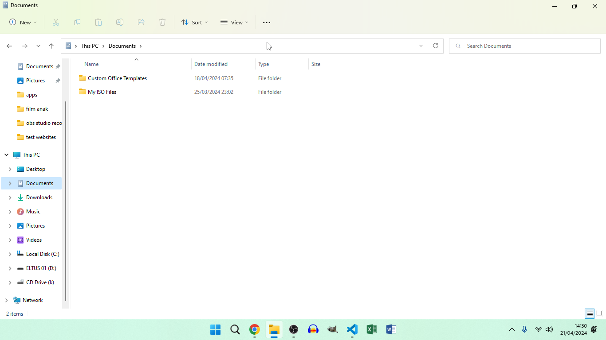
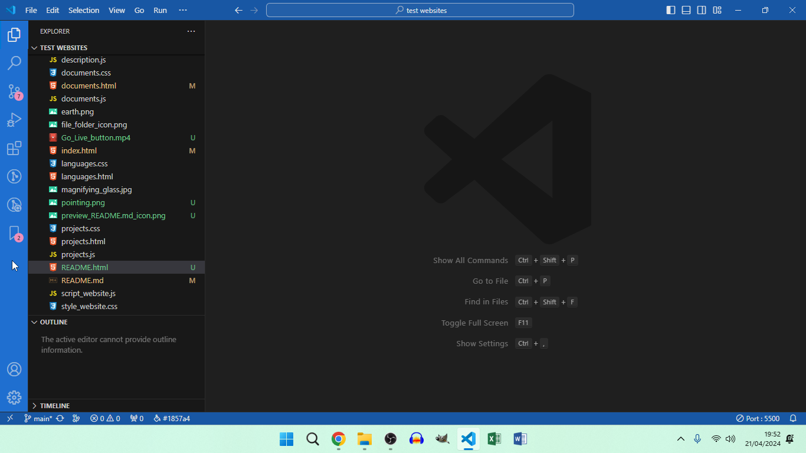
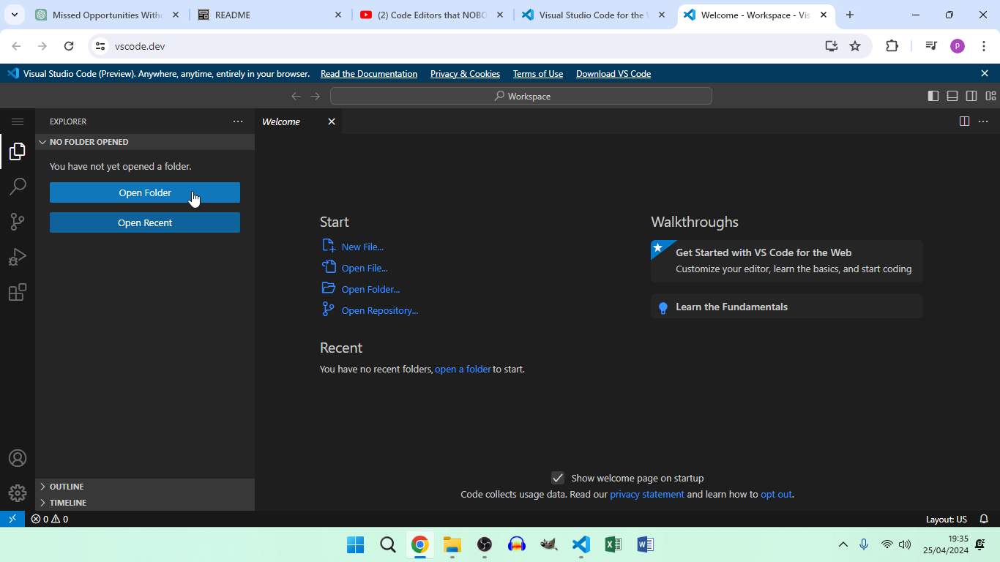

This is a test website created for experimenting with HTML CSS and JavaScript. Please read every info.
How to install
Open your web browser and go to this link, then copy the code, then create the files: Repository
Install vscode and install the recommended extensions:
Part 2: Vscode extensions
Live server
JavaScript (ES6) code snippets
Prettier - Code formatter
Better Comments
Peacock
VSCode Animations
vscode-icons
Bookmarks
GitLens - Git supercharged (Optional)
VSCode Animations
Apc Customize UI++ (Install this extension or change the Installation method of the VSCode
Animations extension)
Part 3: How to install
Do the previous steps on "how to install" part 1. (The first step).
Do the previous steps on "how to install" part 1. (The second step).
Once you have installed those extensions, that I just talked about, then click the button that
says: "Go Live". Here's the video about the "Go Live" button:
Open your web browser, and type in the link: "localhost:5500", or just click this link: Localhost
Open the test websites folder, and open the "index.html" file
And there you go! Now, you have test website installed.
Update: I have just realized that you can just clone the repository, and if you don't know,
follow these steps:
Open CMD (A.K.A Command prompt)
And type in "git clone" with the repository URL
git clone
Then click enter.
And now, you have the repository on your computer, and since this is just a clone of the
repository, so you can customize this clone repository as you like. Since it is not connected to
the original repository. And btw here's the full git clone command:
git clone https://github.com/eltus/test-website
Copy this command to CMD, PowerShell, or the terminal, and click enter.
Warning!: Please use this command on CMD, PowerShell, or the terminal on a folder, or else, the
repository will be cloned to the system32, or the current user folder you are using inside the
users folder. Because CMD and PowerShell set the default folder as your current user folder you
are using inside the users folder, or the system32 folder depending on opening CMD, or
PowerShell, normally, or as an admin (A.K.A administrator). So if you wan't to clone this
repository, then follow these steps:
Open CMD, PowerShell, or the terminal on a folder you wan't to clone the repository
Go to the top of the folder location, for example:

In this example, my mouse is pointing at something.
Click it with your mouse
Type in "CMD"
And then, click enter.
Now, this will open a CMD window
Copy this command from the "Update: I have just realized that you can just clone the
repository, and if you don't know, follow these steps:" section, or copy this command: (it's
the same command from the first "Update" section)
git clone https://github.com/eltus/test-website
Now, you have the cloned repository on the folder, you wan't the repository to be
cloned, instead of the current user folder you are using inside the users folder, or the
system32 folder.
Update: Here's how to install the vscode extensions from part 1, and 3!
Open vscode, or install vscode if you haven't already
Look to the left sidebar, for example:

In this example, my mouse is on the left sidebar.
Click the 4 grouped squares icon (A.K.A the extensions icon), under the 4 other icons (A.K.A
the explorer, search, source control, and run and debug icons).
Search those 11 extensions from part 3 of "How to install" section
Click on those 11 extensions. (Or 1 if you are searching them one-by-one)
Then click on the blue "install" button.
And now you have those 11 extensions installed. You can also install those 11 extensions on the
vscode extension marketplace, and here's how you do it:
Open your browser, and search "vscode extension marketplace"
Click the first link that appeared
Repeat the same steps from "Update: Here's how to install the vscode extensions from part 1,
and 3!" section. (Step 4, 5, and 6, but the blue install button becomes the big green
install button! The only thing that is changed are the size, and color)
When you click the big green "install" button, the website says that the extension will be
opened on vscode, but it needs your permission to open it, click yes, then it will open the
extension and install it (I think)
And now, you have those 11 extension installed from vscode itself, and the vscode extension
marketplace.
Update: My website is now deployed! To access my website, click this link:
Update: I just realized that you need git installed in order for the "git clone" command to
work, so here's how you install git:
Open your browser, and search, "git download" and click the first link that appeared, or
click this link: Git download
Pick your OS (A.K.A Operating System). (It's either Windows, macOS, or Linux)
Double click the installer
Customize the installation as much as you like. (Not the entire installer tbh)
Click the install button, once you have customize the installation. (Not the entire
installer
tbh, again)
Now, you have git installed, and be able to use the "git clone" command.
Update: Here's the Indonesian version of this page, if you don't know english:
Update: I just realized that if you're new to programming, or do not know vscode, or do not know
how to use vscode, then follow these steps on how to install and use vscode:
Open your browser, and search, "vscode download", and click on the first link that appeared,
or just click this link: vscode
download
Pick your OS. (It's either Windows, macOS, or linux)
Click on the installer file
Customize the installation as much as you like. (Not the entire installation tbh)
Then click install button, once you have customize the installation. (Not the entire
installation tbh, again)
Open vscode once the installation was completed
Install the recommended extensions from the, "Part 2: Vscode extensions" section
Clone the repository by opening CMD, PowerShell, or vscode's terminal, and type in:
git clone https://github.com/eltus/test-website and enter.
And now, you have the repository and vscode on your computer, and you can use the recommended
vscode extensions to customize the cloned repository as you like.
Update: I just realized that you can just use the browser/online version of vscode, and here's
how you do it:
Open your browser, and copy this link: https://vscode.dev/, or click this link: vscode.dev
Click on the "Open folder" button, for example:

In this image, my mouse is pointing at something, and you must click it with your mouse.
Once you have clicked that button, then select a folder, and the website will send a message
saying: "vscode.dev will be able to view files in New folder". Replace "New folder" with
your actual folder name, or the repository's folder name (once you have cloned it ofc), and
click view files, then it will say: "Do you trust the authors
of this folder?". Click yes, but it will also ask you to save changes to the folder, so
click, Save changes
Now you'll be able to customize the repository without vscode installed on your computer. And
check more info on the
vscode web
documentation.
Warning!: The browser/online version of vscode is still at preview, so there might be some bugs,
and glitches in the browser/online version of vscode, so it's highly recommended installing
vscode, but once the browser/online version of vscode has moved to it's full release, then you
can use the browser/online version of vscode, but you can still use it ofc, but there might be
some bugs, and glitches, but you can still use it, even though it's still in preview.